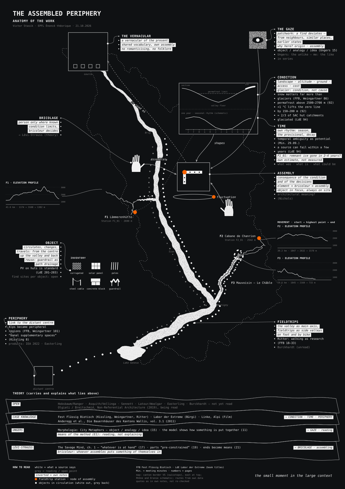

Contents
- 0Introduction
- 0.1Opening: two measuring stations
- 0.2The Assembled Periphery: the two terms
- 0.3Point of view
- 0.4Ungers and Lévi-Strauss: reading and assembling
- 0.5How the text is built
- 0.6Stance
- 1The Alps as Condition
- 1.1Choice of sites
- 1.2Landscape
- 1.3Paths
- 1.4What happened to them: access, change, periphery
- 1.5Above shapes the conditions below
- 1.6Method
- 2Fieldtrips
- 2.1Lämmerenhütte (Gemmi)
- 2.2Val de Bagnes: Chanrion, Mauvoisin, Le Châble
- 2.3Further fieldtrips
- 3Conversation with Someone Who Builds
- 3.1Interview
- 4Assembly
- 4.1Comparing the moments
- 4.2Condition, time and periphery
- 4.3The architectural in the object and in the gaze
- 5Position and Architectural Question
- 5.1The vernacular of the present
- 5.2The architect as reader, not inventor
- 5.3The question
- 6Conclusion: Atlas of Assemblies
- Bibliography · Image credits · Appendix: field log
